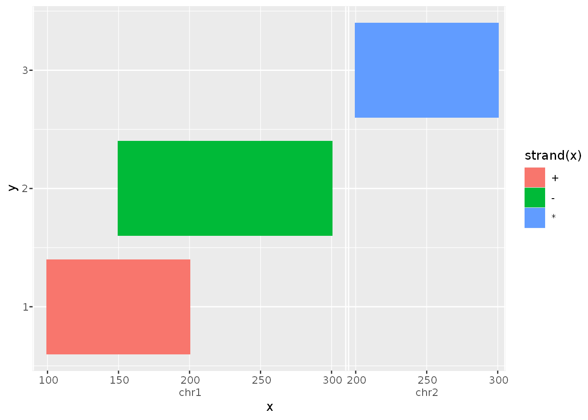

This packages offers tools to integrate Bioconductor S4 classes and the ggplot2 plotting system.
Installation
You can install this experimental branch from GitHub with:
# install.packages("devtools") devtools::install_github("teunbrand/ggnomics")
Example
The main idea is that you would be able to plot S4 Vector classes as you would any other vector, without having to convert to base R or tidyverse data-structures first. Below is an example of how the GRanges class inside a DataFrame is handled.
suppressPackageStartupMessages({ library(ggnomics) library(GenomicRanges) }) df <- DataFrame( x = GRanges(c("chr1:100-200:+", "chr1:150-300:-", "chr2:200-300:*")), y = 1:3 ) g <- ggplot(df, aes(x, y, fill = strand(x))) + geom_tile(width = 0, height = 0.8) g

Explanation
To showcase what happens in the example above notice a few things. Most noticeable is that the GRanges class is used as a valid position variable. You can also notice the new axis guide, that appropriately indicates the seqnames slot of the input.
Because geom_tile() re-parametrises the data as a rectangle with xmin and xmax values, the GRanges object respectively uses it’s start- and end-positions depending on the context of the aesthetic’s name. This opens up a wide range of geoms to be compatible with ranged classes.
The aes(..., fill = strand(x)) statement uses ggplot2’s non-standard evaluation as you would expect with base::data.frames. Furthermore, strand(x) evaluates to a factor-Rle, which is now a valid, mappable, discrete class.
The data retains the S4 classes throughout the vast majority of plot building, allowing specialised geoms and stats to take advantage of this.
(ld <- layer_data(g)) #> fill x y PANEL group xmin xmax ymin ymax #> 1 #F8766D chr1:100-200:+ 1 1 -1 chr1:100-200:+ chr1:100-200:+ 0.6 1.4 #> 2 #00BA38 chr1:150-300:- 2 1 -1 chr1:150-300:- chr1:150-300:- 1.6 2.4 #> 3 #619CFF chr2:200-300:* 3 1 -1 chr2:200-300:* chr2:200-300:* 2.6 3.4 #> colour size linetype alpha width height #> 1 NA 0.1 1 NA 0 0.8 #> 2 NA 0.1 1 NA 0 0.8 #> 3 NA 0.1 1 NA 0 0.8
The trick here is that the S4 classes are protected from incompatible S3 data.frame operations, such as rbind(), by being wrapped in their own vctrs-class. They still contain the beloved S4 classes though.
Footnotes
This package is still very much a work in progress. Since the Bioconductor ecosystem is rich with specialised infrastructure and classes, I haven’t managed to try and test every class. However, most things should work with Rle, IRanges and GRanges classes.
Furthermore, not all ggplot2 features lend themselves well to S4 vectors yet: I’ve yet to devise a polar coordinate system and non-identity scale transformations. Also not all position adjustments or layer stats are expected to work perfectly.
I’d also like to mention that this is not the only genomics-oriented ggplot package out there. Take a look at the ggbio package for instance. In my view, the main difference is that this package is not going to produce your pretty plots for you, but by extending ggplot2, this package allows the flexibility required to build your own genomics plots.